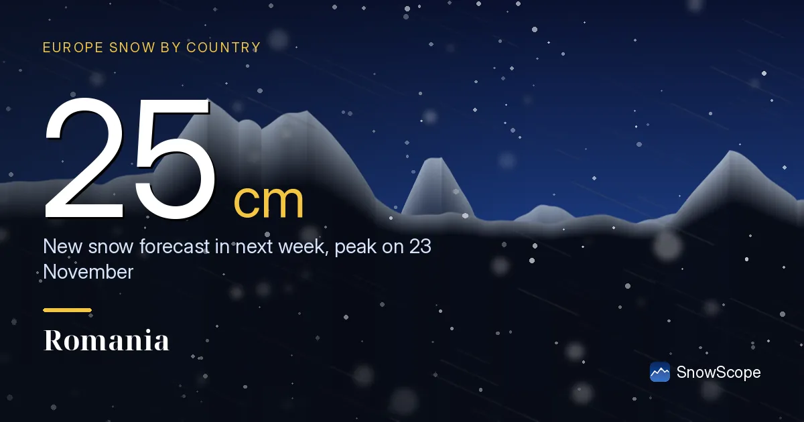

Romania: 25 cm new snow forecast in next week, peak on 23 November
Snow is coming to Romania's high peaks. In the next seven days, models show up to 25 cm of new snow will fall, with the heaviest fall on 23 November when 12 cm is expected at high altitude.
See the live snow forecast for Ski Vidra in the SnowScope appSnow depth, powder alerts and the 3D map, free.
Heavy snow arrives next week
The forecast for the next three days is modest: up to 9 cm of new snow across the mountain areas, with most of it falling above 1500 m. But from 23 November onwards, a larger weather system will bring much more. On that day alone, we model 12 cm of new snow. By the end of next week, the total fresh snow across Romania's ski country could reach 25 cm.
This is significant for a mountain range in mid-November. Snow at this time of year is often thin and patchy, so this event will help build a more stable winter base. The highest peaks, above 2000 m, will collect the most: they are already starting to accumulate depth, and next week's precipitation will add substantially to the water stored in the snowpack.
| Resort | Snow depth | New snow, 72 h | Coming, next days | Top |
|---|---|---|---|---|
| Ski Vidra | 30 cm | 7 cm | 5 cm | 1,974 m |
| Balea Lac | 18 cm | 6 cm | 5 cm | 2,032 m |
| Straja | 14 cm | 3 cm | 3 cm | 1,865 m |
| Parâng | 9 cm | 7 cm | 5 cm | 1,768 m |
| Havas Bucsin | 9 cm | 2 cm | 5 cm | 1,494 m |

Where the snow is falling hardest
The Retezat is leading. Over the past 72 hours, it has picked up 55 cm of new snow, far more than anywhere else in Romania. The Rodna Mountains follow with 21 cm in three days, and the Parâng Mountains with 18 cm. These three ranges are the wettest parts of the country right now and will likely continue to see the heaviest accumulation over the coming week.
Snow cover is concentrated above 1700 m. Between 1500 and 2000 m, only 56 percent of the terrain is white. Above 2000 m, every slope is covered. Below 1500 m, snow is rare; most of the lower valleys and foothills remain bare.

Resorts: depth now and what's coming
Among the 52 ski resorts we model across Romania, only 14 have measurable snow today. Ski Vidra is leading with 30 cm depth and 7 cm from the last three days. Balea Lac holds 18 cm. These two are your best options for skiing in the next few days.
Over the next three days, the resorts will add only small amounts: Ski Vidra expects about 5 cm more, as does Balea Lac. But after 23 November, fresh snow will reach lower elevations too. Straja, Parâng, and Havas Bucsin are all relatively low; they will need the week's heavier falls to build skiable bases.
Water stored and released slowly
From a hydrological view, this snow matters for the mountain water cycle. Snow that falls now on high ground will store water through winter and release it gradually into spring and early summer when melt begins. The Retezat and Rodna ranges are particularly important: they feed rivers that supply water to downstream valleys.
The snow line sits at 1700 m today. After 23 November, it may drop lower as colder air moves in with the precipitation. If temperatures stay mild, some of the new snow at mid-elevation could melt quickly, but the high peaks should retain everything.
Pattern shift: seven-day outlook
Snow coverage has shrunk sharply in the past day. On 11 November, about 8370 square kilometres of the Carpathians were white; today, only 3580 square kilometres show snow. This is normal for November as early season snow often melts during warm periods. The good news is that the forecast should reverse this trend from 23 November onwards.
In the week of 26 November to 2 December, up to 33 cm of new snow is possible. That second week of late autumn could deliver winter conditions more solidly than this first one has.
What to watch
The Retezat is performing very well and will be the snowiest area through next week. If you have access to that range, it offers the most reliable conditions. By contrast, the lower resorts like Havas Bucsin are struggling; they will need most of next week's snow to become skiable. Snow depth uncertainty is high at low elevations: thin cover may hide rocks and rough ground.
Tips for skiers
- Ski Vidra and Balea Lac have the most snow now; plan visits there in the next two days if you want reliable depth.
- After 23 November, check the Retezat and Rodna Mountains for the freshest snow and deepest accumulation.
- Lower resorts below 1600 m will not be reliable until after 25 November, once most of the week's snow has fallen.
- Above 2000 m, all terrain is snow-covered now and will stay that way. High routes are your safest choice for early-season touring.
- Before venturing off-piste, check the latest official avalanche bulletin from Romania's mountain forecasting service.
About these numbers
Resort snow depths are the deepest snow on the resort's upper slopes from the SnowScope snow model (about 1 km, run of 18 November); they are estimates for an area, not a measurement at one point. Station values are measurements on the date shown. Forecasts can change. Always read the official avalanche bulletin before going off-piste.
Cite this report
For research, teaching or the press: the numbers and charts are free to reuse under CC BY 4.0 with this citation.
SnowScope (2026), Romania: 25 cm new snow forecast in next week, peak on 23 November, https://snowscope.app/blog/en/2026/11/romania-snow-on-the-way-18-november-2026.html, accessed 2026-11-18
SnowScope (Atlas Labs). (2026, November 18). Romania: 25 cm new snow forecast in next week, peak on 23 November. SnowScope snow reports. https://snowscope.app/blog/en/2026/11/romania-snow-on-the-way-18-november-2026.html
BibTeX
@misc{snowscope2026romaniasnowontheway18nov,
author = {{SnowScope (Atlas Labs)}},
title = {Romania: 25 cm new snow forecast in next week, peak on 23 November},
year = {2026},
month = nov,
howpublished = {\url{https://snowscope.app/blog/en/2026/11/romania-snow-on-the-way-18-november-2026.html}},
note = {Published 2026-11-18 13:46 UTC; accessed 2026-11-18}
}· CC BY 4.0 · Methods, data and tools →
Ski Vidra: snow and temperature by height, this winter vs last (tools) →
Follow Ski Vidra
Free: a message when fresh snow is coming, and the forecast every morning.
More snow reports

Crested Butte snow report: 38 in up top (US West, 18 November). This is a good start at Telluride. At 10,620 ft (3,237 m), our model has 22 in …

Where should you go skiing in the US West? If we were going this weekend, we would choose Palisades Tahoe Alpine Meadows, Kingvale and Boreal, based …

Only 16 US Northeast resorts have skiable snow on 18 Nov. Thin cover and rain-crust risk mean careful gear choices. Forecasts for 19-21 Nov show no new snow.